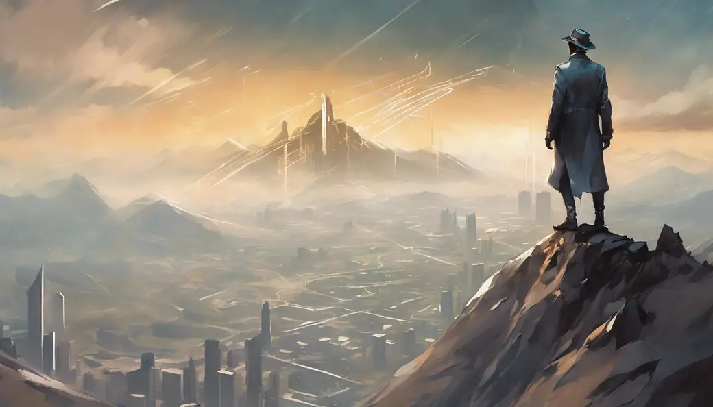

Experimenting with ChatGPT to write articles
I was experimenting with chatGPT to help me with writing an article, I managed to get it to write some text that I thought was very useful on its own for people to see.
I wrote this prompt for chatGPT:
General progression of a beginner game designer to an advanced one; how the priorities shift from mere experimentation of simply finding joy of making something cool just work, to then evolving and starting to think about the entirety of the game project as a whole, implementing game design not only within the project but also the things that surround it, such as marketing, presentation, community and more.
Note: The article writing experiment with chatGPT itself failed because I wasn't aligned with chatGPT's views on game design and game development. It ended up saying stuff I absolutely do not agree with and think is misguided and wrong. Ultimately I was forced to write all my articles manually.
Nevertheless sometimes it generates great pieces of text that I felt were worth sharing, even if they’re a bit off in my opinion. What I did here was take that generated text and afterwards I give you my personal thoughts about it with my useful insights. Enjoy!
ChatGPT wrote this in response
Certainly! Based on the premise of your article about the general progression of a beginner game designer to an advanced one, here's a concise list of key points you could cover:
- Initial Passion and Experimentation:
- The excitement of diving into game design as a beginner.
- Experimenting with ideas and learning the basics of game development tools.
- Focus on Core Mechanics:
- Shifting priorities towards making core gameplay mechanics work seamlessly.
- Gaining proficiency in coding and understanding the technical aspects of game design.
- Iterative Design Process:
- Embracing an iterative design process to refine and improve the game over time.
- Learning from failures and incorporating feedback to enhance the gaming experience.
- Understanding Player Experience:
- Transitioning from a focus on personal enjoyment to understanding and catering to the player's experience.
- Incorporating user feedback to create a more engaging and enjoyable game.
- Expanding to Full-Game Vision:
- Moving beyond individual mechanics to envisioning the entire game.
- Understanding the importance of a cohesive and compelling game narrative.
- Incorporating Design Beyond Gameplay:
- Recognizing the impact of aesthetics and UI/UX design on the overall player experience.
- Learning how visual and auditory elements contribute to the game's atmosphere.
- Marketing and Presentation Skills:
- Realizing the significance of marketing for a game's success.
- Developing skills in presenting and showcasing the game to potential players or investors.
- Community Engagement:
- Understanding the role of a community in the success of a game.
- Engaging with players through social media, forums, and other platforms.
- Adapting to Industry Trends:
- Staying updated on industry trends and technological advancements.
- Adapting game design principles to align with the current market and player expectations.
- Balancing Creativity with Realism:
- Striking a balance between creative ideas and the practicalities of game development.
- Considering project scope, time constraints, and budget limitations.
- Team Collaboration and Leadership:
- Evolving from a solo game designer to collaborating with a team.
- Developing leadership skills to guide and inspire team members.
- Continuous Learning and Professional Development:
- Embracing a mindset of continuous learning and improvement.
- Exploring new tools, techniques, and staying open to innovation in the field.
By covering these points, you can provide a comprehensive overview of the journey from a beginner game designer to an advanced one, encompassing both the technical and creative aspects of the profession.
My thoughts on this and useful insights
Overall I think this highlights pretty well the different things a game designer will collide with during their evolution.
They don't necessarily happen in this particular order or even in the way that chatGPT described them, but generally all these things are something I too went through and in some way or another. It is totally normal to learn something further down the list before learning things higher in the list or learn them simultaneously due to the tangled and interconnected nature of game design work.
I don’t like how it seems to easily bundle the outright tasks of marketing, community management and coding to become the responsibility of the game designer instead of merely highlighting that they need an understanding in it. This is only relevant if you’re a solo developer, not as just a game designer working in a team with an artist, a coder, musician, audio engineer, marketer and community manager.
But still, if anyone is starting off in game design or going into solo game development, then this outline is a pretty good thing to look at as a roadmap to remember for the future.
If you don't know where to go at certain points in your journey as a game dev or game designer, you can check that outline to give you a hint on what you should tackle next and notice the hidden victories that you may already have achieved without realizing it yourself. Celebrating progress is important too for purposes of staying motivated for yourself.
The outline gives you actionable keywords and search terms that you can enter into a search engine like google.com or similar to open up new discoveries for books, courses, videos or other things that you didn’t know existed but are something you desperately needed.
An important note about being an innovator

The other problematic part is the “Adapting to Industry Trends”. To some degree yes, a game designer does need to keep in touch with the latest advancements of technology and conventions to take advantage of new possibilities and upgrade/replace old systems into better ones.
However, player expectations and the current market may not always know what they want until they get it, meaning they’ll be giving out bad advice and poor directions that will lead to mistakes. Things that are popular aren’t always the smartest, best or sustainable solutions available.
Remember; people, players, critics and “experts” are limited by the information they currently have; if you’ve discovered something amazing that is outside their knowledge or understanding due to their rigid and outdated mindsets, they’ll be unable to see the same value you saw until after the project is finished and released for them to try it. And usually even then there will be a period of controversy and the infamous and annoying 5 stages of grief that other people will go through in relation to what you’ve made:
- Denial.
- Anger.
- Bargaining.
- Depression.
- Acceptance.
During this controversial period when people are exposed to a new idea that they feel has shaken their world, they will paradoxically attack you and berate you unprovoked. The important thing for a game designer working on innovative projects is to persevere and continue believing in themselves in the face of this bizarre hate wave. Don’t give in to this external pressure; break through it and change the world despite their protests. If you don’t do it, someone else will and smugly enjoy the benefits that you could have had.
No matter what, a game designer should first and foremost always develop their designs based on the goal and purpose of the project, never on external factors like what is trending or popular out there. Nothing gets innovated and nothing advances if you fail to do this.
Talk about it
Questions, disagreements and ideas of your own are all welcome. Discuss this article with other readers on the Reactorcore Games Discord, follow new articles and dev news on Patreon, or write to me directly.